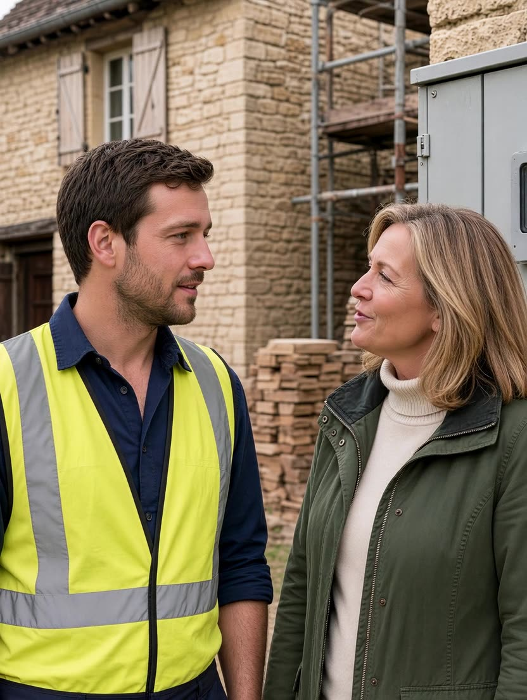

Anglais · CAP Jardinier-paysagiste · Trades in English
Parmi vingt dialogues en anglais au travail : Arthur, paysagiste près de Beynac, parle avec un client dans le jardin. La page réunit aussi d’autres métiers du CAP, du bac professionnel et du CFA.
Voir le support